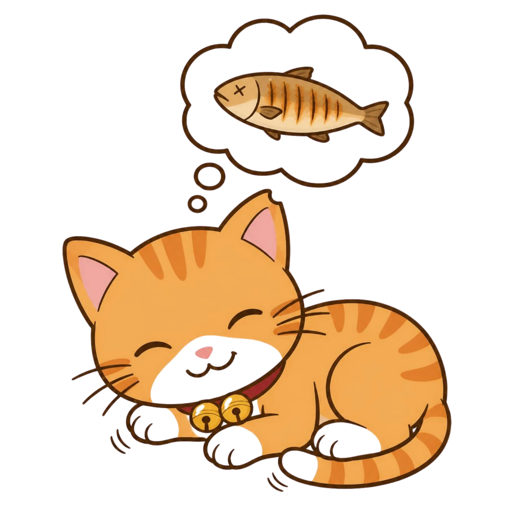
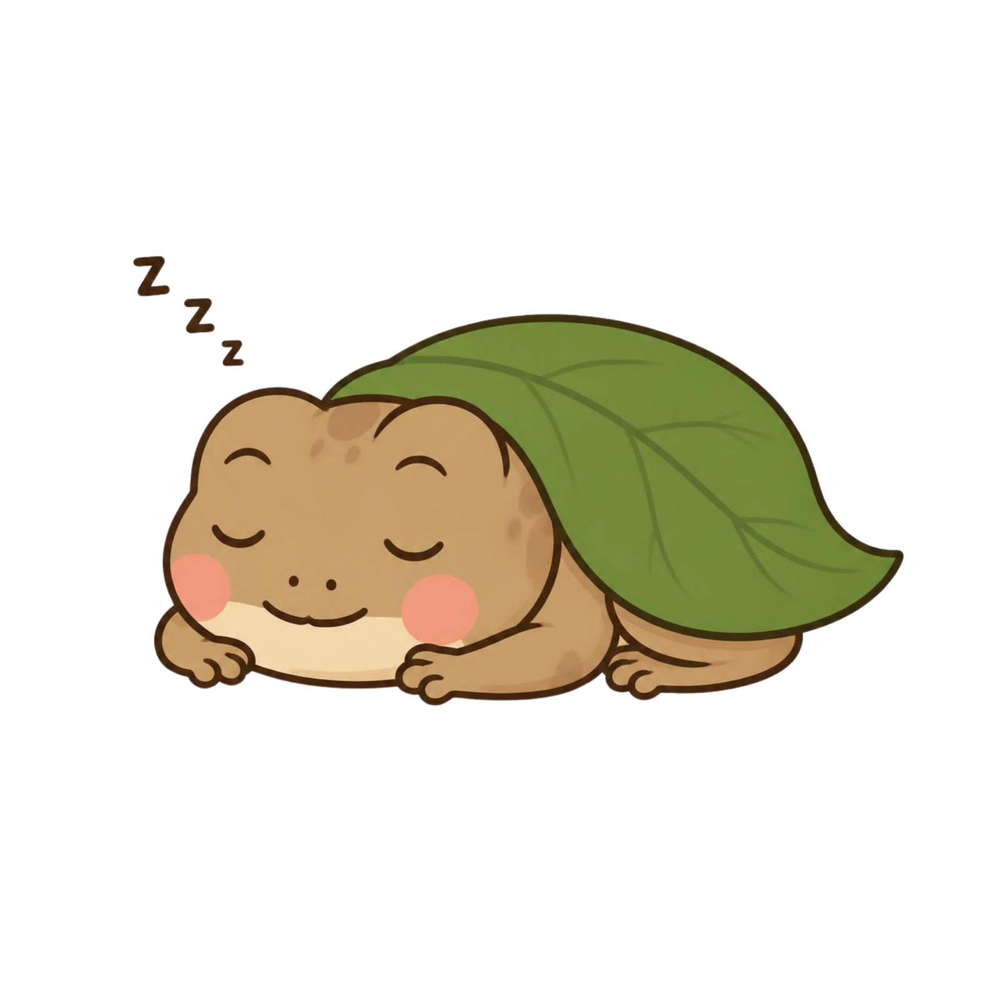
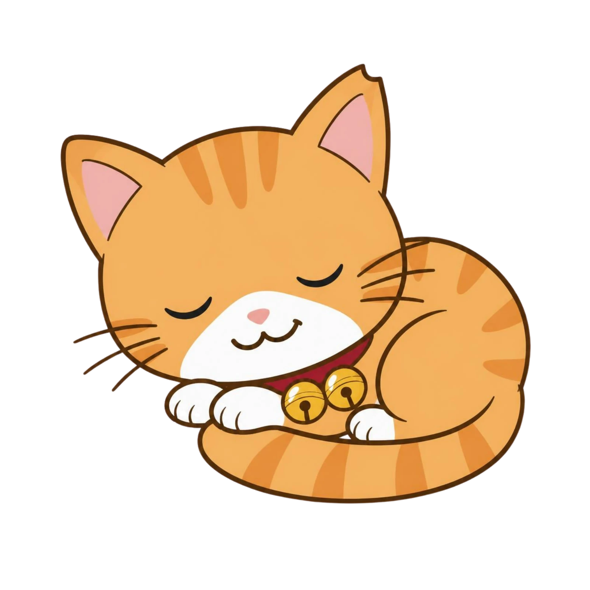

胡臺寧靜時光
風格
圖書館書櫃
夜空月光
黑板粉筆
極簡大字
雲朵夢境
露宿野營
洞穴螢火
叢林秘境
角色

小橘（貓）

胡小呱（青蛙）
中／EN／VI
中文
English
Tiếng Việt
說明
午休調暗
全螢幕
胡志明市臺灣學校 · 圖書資訊中心
胡臺寧靜時光
時鐘版
挑戰版
10:24
:08
10 月 17 日 星期六
小橘睡熟了
今日安靜時間
0:00
今日吵醒
0
安靜比例
—
挑戰時間（分鐘）
5
10
15
20
25
30
35
40
45
50
55
60
其他
分
05:00
開始挑戰
剩餘時間
05:00
保持安靜，讓小橘入睡
暫停
提前結算
取消
班級音量
試音
?
打開麥克風
門檻
55
示範音量
連續安靜
0:00
最長 0:00
今天還沒被吵醒
+1 分鐘！
熟睡

Z
z
Z
💢
喵！好吵！
我知道了
睡得超飽，下午有精神！
今日小橘午睡品質
安靜比例
0%
吵醒次數
0
最深睡到
深睡
最長連續安靜
0:00
淺睡
熟睡
深睡
被吵醒
全班加 1 分
不加分，關閉
今天累積
0
分
圖資中心 蕭聿新設計